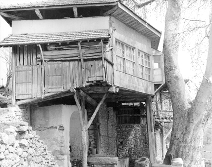

Aziz Barla
23 Haziran 1970
Barla ve Barlalılar, taptaze hatıralarla dolu.
Nur Müellifi’nin iltifatına nâil olmanın sevinci içindeler..
Kışın sonlarında ılık bir bahar günü Barla’ya vâsıl olmuştuk. Vakit ikindi üzeri idi. Güneş iyice açılmış, dağların üzerinden guruba hazırlanıyordu. İkindi serinliği ve baharın ruhlara neşe ve huzur veren havası, yeni çiçeklenmiş meyve ağaçları ve tarlalarda rengârenk açan çiçekler, baharın yeryüzündeki şahane dekorunu tamamlıyordu. Usta bir ressamın elinden çıkan şahane bir tablo bile, yüce yaratıcının bu fıtrî ve ilahî levhasını aslâ tasvir edemiyordu ve edemezdi de.
Barla’ya girişte yolun sağında Barla’nın İlkokulu vardı. Talebeler o günlük dersleri bitirmişler, çalan zille beraber hepsi neşe ve sürurla –yuvalarına dönen kuzular gibi– koşarak yola dökülmüş, etrafımızı sarmışlardı. Merakla ve muhabbet nazarlarıyla bizlere bakıyor, hep birden “Hoş geldiniz, hoş geldiniz!” diye bağrışıyorlardı.
Barlalı çocuklarla beraber, Üstad Bediüzzaman’ın dershanesine doğru ilerliyorduk. Sanki Üstad’ın o efsunlu ikliminde Barla’da her şey mâneviyata bürünmüş gibiydi. İşte, böyle mânevî bir atmosferde, ben, bir ara çocuklara takılıyorum:
– Çocuklar, söyleyin bakalım, siz en çok kimi seviyorsunuz?
Çocuklar hep bir ağızdan –hiç tereddüt etmeden– Allah’ı (c.c.) sevdiklerini söylüyorlardı!
Şimdi Barla’da idik. Barla’nın dağları, Barla’nın deresi, hâlâ damarlarında Üstadın zikrinden izler taşıyan Çınar ağacı, 28. Söz’deki Cennet bahsinin yazıldığı Sıddık Süleyman’ın cennet bahçesi.. ve Nur’un muazzez müellifinin müstesna hayatının geçtiği diğer menziller... Allah’ım, sen bir kulunu sevince nasıl da onu ve ona ait her şeyi sevdiriyorsun!
Barla; dağlar arasında küçücük bir belde... Çamdağı’ndan eriyen karların meydana getirdiği Barla deresi beldenin yanı başından tıpkı Nurs Deresi gibi şırıl şırıl akıp gidiyor. Vakit, akşam üzeri… dağlardan ve yamaçlardan inen koyun sürüleri, kuzular, keçiler, yaramaz çocuklar gibi bir sağa bir sola koşuşup duruyor. Bu manzara karşısında hayalim beni bir anda alıp, yaklaşık altı ay evvel sonbaharın başlarında gittiğimiz Nurs Köyü’nün derelerine, dağlarına götürüyor! Âdeta vücûdum Barla’da, hayalim Nurs’da idi. Ve devamında hayalim, şu cümleleri hatırıma getiriyordu: Gönüller fatihi, Nurlar’ın aziz tercümanı vatanından ayrılmış, garib ve kimsesiz bir vaziyette hayatını devam ettirmek için nefy edildiği Barla’da, Cenâb-ı Hak, kendisine aynen memleketinin havasını, manzarasını, kokusunu ihsan etmişti.
Barla’nın nur kokulu toprak sokaklarında ilerlemeye devam ediyoruz. Ömrünün sonbaharını yaşayan bir Barlalı çıkıyor karşımıza. Henüz kim olduğumuzu ve niçin geldiğimizi sormadan başlıyor Üstad’dan tatlı tatlı bahsetmeye: “Hoş geldiniz. Ah! Ne bileyim, siz o zâtı bir görseydiniz. Siz onun zamanında bir gelebilseydiniz!”
Barla ve Barlalılar taptaze hatıralarla dolu... Üstad Bediüzzaman’ın Barla’da bulunduğu yıllarda birer çocuk olanlar şimdi yarım asrı çoktan devirmişler. O zamanın delikanlıları, şimdi beli bükülmüş birer pîr-i fâni hâlinde ellerindeki bastonlarla Barla sokaklarında dolaşıyorlardı.
Bir padişahın veya bir sultanın kıymettar bir hediyesini ömrünün en nadide bir hatırası olarak, hayatının sonuna kadar saklayıp daima onunla iftihar eden bir adam gibi, her bir Barlalı, Aziz Üstad’ın ayrı ayrı iltifatlarına nâil olmanın sürûr ve sevinci ile yaşıyordu.
Dağ Kumandanı Çoban Veli
Üstad’ın, yaz aylarında, sabahlara kadar ibadet ettiği ve Nurlar’ın telif yeri olan mübarek çınar ağacının yanındayız. Sanki Üstadımız yine çınar ağacında ve zikirleri ile bize “Hoş geldiniz!” dediğini hisseder gibiyiz. Haşin görünüşlü bir ihtiyar selâm vererek yanımıza geliyor. “Hoş geldiniz!” dedikten sonra “Hocanın talebeleri misiniz?” diye soruyor. Bizler “Evet” deyince de şöyle devam ediyor: “Hoca bana ‘Dağ Kumandanı’ derdi. Dağları ve alttaki yolları göstererek ‘Şu dağlar ve tepeler senin; bu yollar ve Barla ise benimdir.’ derdi.”
Ne Diye Dua Edeyim ki!
Üstad’a müezzinlik yapmış Şem’i Efendi anlatıyor;
Bir gün kaymakam ve nahiye müdürü Üstad’ın sarığına ve kıyafetine ilişmek için geliyor. Henüz düşüncelerini ve niyetlerini açıklamalarına fırsat vermeden Üstad Hazretleri: “Ben safiyim. Ben esirim. Ben hür değilim. Sizin kanunlarınız hür olanlaradır.” diye celâlleniyor. O civarda zulüm ve gaddarlıkları ile tanınan bu iki din düşmanı adam o anda ne yapacaklarını şaşırıyor. “Aman Hocaefendi, biz sizden dua istemeye, nasihat almaya gelmiştik.” diyorlar. Üstad da onlara “Siz namaz kılmıyorsunuz, ben size ne diye dua edeyim ki!” diye cevap veriyor.

1960-1970 senelerinde Barla’da Nur Üstad’ın ilk
“Medrese-i Nuriye’si” (üstte) ve “Yokuşbaşı Çeşmesi” (altta)
* * *
30 Haziran 1970
Üstad’ın şefkat ve merhameti dillere destan..
Her Barlalı’da Üstad’dan bir hâtıra var.
Bereket Vesilemizdi!
Hacı Mehmet Efendi anlatıyor: “O buraya ayak bastığı zaman, burada öyle mahsul oldu ki, her sene dışarıdan buğday alırken o sene dışarı mahsul sattık. O buradan gidince.. O bizleri terk edince mahsullerimiz de azaldı. Eski bolluk ve bereket kalmadı. O gidince Barla’nın bağ ve bahçeleri sarardı, soldu. Ekin onda bire düştü. Eskiden çiftçilik yapan iki yüz amele vardı. Şimdi beş tane kaldı.”
Tokat’ın Tokluğu!
Hacı Mehmet Efendi ile sohbet ederken vakit ilerlemiş, akşam olmuştu. Barlalı fedakâr bir Kur’ân talebesi ve Nur hizmetkârı olan Hacı Bahri Efendi ile beraber yemeğe oturmuş, Hacı Mehmet Efendi’yi de yemeğe davet ediyorduk. Fakat o yemeğe gelmiyor. “Ben tokum.” diyordu. Bunun üzerine Hacı Bahri Amca: “Hâlâ Üstad’dan yediğin tokatın tokluğu mu var da yemeğe gelmiyorsun.” dedi. Biz de merakla bu tokat hâdisesini sorunca, Hacı Mehmet Efendi yine sâfiyane, tatlı tatlı anlatmaya başladı:
“Bir gün yatsı namazına cemaate yetişememiş, Üstadımızın camiine gidememiştim. Üstad, o gece beni görmeyince ‘Mehmet nerede?’ diye soruyor. Bazıları da ‘Bilmiyoruz, bu gece bir siyâsî partinin toplantısı var, belki oraya gitmiştir.’ diyorlar. Bir gün sonra Üstad, gündüz beni çağırtmıştı. ‘Sen nasıl namazı ihmal edip toplantılara gidersin!’ diye bana iki tokat vurmuştu. Hâlbuki ben toplantıya falan gitmemiştim. Biraz sonra Üstadım beni tekrar çağırarak, hurma ve bazı yemişler vererek bana iltifat etmiş ve gönlümü almıştı.”
Mübarek Kaplumbağa
Üstad, bir bahar günü, kırlara giderken yol üzerinde bir kaplumbağa görür. Az ileride çocuklar oyun oynamaktadır. Üstad, çocukların yanında durur, onlara muhabbetle bakar ve: “Sizler mübareksiniz, masumsunuz; bana dua edin. Bu kaplumbağaya da dokunmayın, çünkü o da mübarektir.”
Oradan uzaklaşıp beş dakika kadar giderler. Az sonra Üstad, talebelerinden birisini görevlendirerek o kaplumbağayı alıp getirmesini söyler. Kaplumbağanın yanına giden Nur talebesi, çocukların kaplumbağaya rahatsızlık verdiğini görür ve onu çocukların elinden kurtarır.
Hacı Bahri Efendi
Hacı Bahri Efendi, sâdık ve sıddık bir nur hizmetkârıdır. O da Hazreti Üstad’ı görmüş, onunla beraber bulunmuş ve ona hizmet etmiştir. Üstad’ı ilk tanıyışını, ziyaret edişini ve birkaç hâtırasını şöyle anlatıyor:
“İlk önce, bir hocaefendi gelmiş, nâmı Bediüzzaman imiş, diye işittik. Ankara’dan sürmüşler. Eğridir’den jandarma nezaretinde bir kayıkla gelmiş. Yedi ay Burdur’da kalmış. Etraftan ziyaretçiler ve bütün ulemâ ziyaretine gelmeye başlayınca, kimse ile görüştürmemek için dağlar arasında ücra bir köy olan Barla’ya nefyetmişler. Onun Barla’ya gelişinin dördüncü günü ziyaretine gitmiştim. Başında sarık, sırtında cübbe, heybetli ve haşmetli bir hâli vardı. Gözleri adeta şimşek gibi parlıyordu.”
Şifâ Bulan Deli!
Onun hizmetinde bulunduğum bir gün, Afyon taraflarından misafirler gelmişti. Yanlarında sonradan aklını yitirmiş, yani deli olmuş elleri bağlı bir çocuk vardı. Çocuk, fırsat bulunca veya elleri çözülünce etrafındaki insanlara hücum ediyordu. Üstad Hazretleri, çocuğa şefkatle yaklaştı ve “Bunun niçin ellerini bağladınız, çözünüz ellerini!” dedi. Çocuk, elleri çözülünce birden sakinleşti, sonra da –Allah’ın izniyle– şifa buldu.
Ceza Verilen İşlek!
Afyon’dan gelen misafirleri Barla’ya getiren işleklerden biri, –Hazreti Üstad, eşeğe çok çalışkan ve çok faydalı manasında ‘işlek’ derdi– heybedeki karpuzlardan birini yemişti. Üstad da, işleğin karpuzu yemesinin cezası olarak, oradakilere “Bu işleğe deniz kenarındaki odunları yükleyin, sonra da odunları buraya getirin!” demişti.
***
7 Temmuz 1970
Çam ağaçlarından yapılan merdivenlerle
Nur Müellifi’nin “çayhane” adını verdiği tahtadan yapılmış kulübeciğine çıkılıyor.
Çam Dağı’na Hareket
Haşmetli çınar ağacının dibindeki dershane-i Nuriye’de Barlalı Nur talebeleri ile sohbetimiz, gaz lambasının ışığında1 geç vakte kadar devam etmişti. Sabahleyin ezanla beraber kalkmış, çınar ağacının dibindeki çeşmeden abdest alarak sabah namazını kılmıştık. Sabahın, o tatlı serin havası pencereden içeri süzülürken, dışarıdan çınar ağacındaki kuşların cıvıl cıvıl sesleri geliyordu. Namazı müteakip bir torbaya biraz ekmek biraz peynir, zeytin ve helva yerleştirerek, dört saatlik mesafede olan Çam Dağı’na doğru yola çıktık. Mevsim henüz ilkbaharın başlangıcı olduğu için hava serin ve gökyüzü ise parçalı bulutlu idi. Barla’nın dağ ve tepelerinde marşlar söyleyerek yürürken, yollarda sürülere, çobanlara rastlıyorduk. Koyun ve kuzular baharın neşesi ile bir yandan sağa sola zıplayarak kaçışıyorlar, bir yandan da çayırlıklarda otlamaya çalışıyorlardı. Bir buçuk saat kadar yürüdükten sonra bir çeşme başında konakladık. Bahar güneşi ile dağlardan eriyen kar suları dağın yamacından şırıl şırıl akıp gidiyordu. Orada, buz gibi dere suyu ile birer abdest aldık ve zinde bir kuvvetle yeniden yola devam ettik.
Az sonra dağ yolculuğu bitmiş, çam ağaçlarıyla kaplı ormanlık alana gelmiştik. Çam ağaçlarının altından bir müddet yürüdükten sonra karlarla kaplı bir yere gelmiştik. Karların içinde bata çıka bir buçuk iki saat kadar yürümüştük. Ayaklarımız su içinde kalmıştı. Bitkin bir vaziyette ormandan çıkmış, güneşli ve temiz bir yere gelmiştik. Az ileride Çam Dağı tüm ihtişamı ile arz-ı endam ediyordu. Nihayet Çam Dağı’na vâsıl olmuştuk. Bir anda bütün yorgunluğumuzu unutmuştuk. Bir çeşme başında oturarak Çam Dağı’nı seyretmeye başlamıştık. Gökyüzü pırıl pırıl, masmavi… Henüz beyaz örtüsünden kurtulamayan dağlarda, rengârenk bahar çiçekleri, sarıçiçekler, çiğdem çiçekleri, papatyalar ruhumuzla beraber gözlerimize âsûde bir dinginlik sunuyordu.
Çam Dağı’na Vuslat
Çam Dağı şimdi karşımızda idi. Asrın sahibi, sultanı; Kur’ân’ın nuru Risale-i Nurlar’ın tercüman-ı muazzezi, Hazreti Bediüzzaman’ın menzili. Eteğinde uzunca bir ağaçtan yapılan yalak ve onun içinde şırıl şırıl akan buz gibi sular, tabaka tabaka yükselen dağlar ve Eğridir Gölü.. Nur Müellifinin tabiriyle “Barla Denizi”
Geçmiş zaman olur ki, hayali cihan değer. Evet, o yollarda o dağlarda onu hatırlamak, onu tahayyül etmek, elbette dünyalara değerdi. Kur’ân’ın bir hizmetkârı, Peygamber Aleyhissalatü Vesselâm’ın davasının fedakâr bir varisi, Allah’ın aziz bir kulu olan Hazreti Üstad’ın hatıralarını bol bol yâd etmiştik!. Çam ağaçlarından yapılan bir merdivenle, Nur Müellifi’nin dallar arasındaki tahtadan yapılmış kulübeciğine çıkmıştık. Buralar, Üstad Bediüzzaman’ın bu garib dağlarda, bu ıssız yerlerde, yalnız ağaçların hışırtıları içinde, yaz aylarını geçirdiği mübarek menzillerdi. “Çam Ağacı”nın tepesinden görünen manzara tek kelime ile muhteşemdi. Sanki Van Kalesi’nden Van Gölü’nü seyrediyor gibiydik. Az ileride “Çam Ağacı”na elli-altmış metre mesafede uçurumun dibinde dik bir yamacın kenarında Üstad’ın yalnızlığına ortak olan “Katran Ağacı” vardı. Üstad Çam Dağı’nda bulunduğu zamanlarda misafirlerini burada kabul eder, onlara çay ikram eder, burayı çayhane diye isimlendirirmiş.2
Elbette bu menziller ve bu hatıralar hakkında ciltler dolusu eserler yazılmalıdır ve yazılacaktır da. Bu işi ise ağabeylerimizden ve Nâzım’larımızdan bekliyoruz. Zira bir kuş, şahinlerin ve kartalların uçuşunu ancak bu kadar taklit edebilir.
1930’da Cemâl Can’ın Barla Nahiye Müdürlüğü’nde yapılan Çaşnîgîr Paşa Camii karşısındaki hükümet konağı
(üstte) Genç ve Ulu Çınar: Barla’nın en genç çınarı.
Cennet Bahçesi altında yer alıyor.
(altta) “Ulu Nur Çınarı”, yanında “Yokuşbaşı Mescidi’nin minaresi”,
en sağ üstte ise 1950’den sonraki “Nur Medresesi”